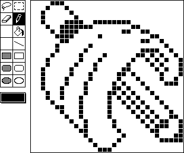
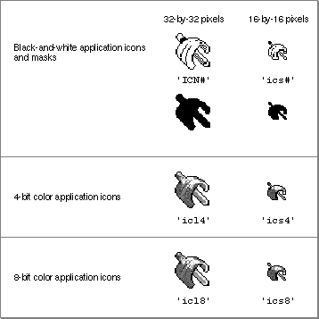

Legacy Document
Important: The information in this document is obsolete and should not be used for new development.
Important: The information in this document is obsolete and should not be used for new development.


Introduction to the Icon Utilities
An icon on a Macintosh screen is an image that graphically represents some object, such as a file, a folder, or the Trash. On the desktop, the Finder displays icons representing your application and the documents it creates. The Finder also allows users to manipulate icons on the desktop and in folders.If necessary, your application can also display icons in its menus, dialog boxes, or windows. You define an icon for a menu item by providing the icon's icon number in the
'MENU'resource that describes the menu item. If you define an icon for a menu item in this manner, the Menu Manager automatically displays the icon whenever you display the menu using theMenuSelectfunction.You usually define icons in dialog boxes by defining an item of type
Iconand providing the resource ID of the icon in the item list ('DITL') resource that describes the dialog. If you define an icon for a dialog item in this manner, the Dialog Manager automatically displays the icon whenever you display the dialog box using Dialog Manager routines.Both the Menu Manager and Dialog Manager allow you to display icons of resource type
'ICON'or'cicn'. The Menu Manager also allows you to display icons of resource type'SICN'. To display other types of icons in your menu items, you can write your own menu definition procedure and use the routines described in this chapter to draw the icons. To display other types of icons in your dialog items, define items of typeuserItemand use the routines in this chapter to draw your icons.To display icons of any kind in your windows, use Icon Utilities routines. Icons in windows can be useful for representing files and folders in certain applications, such as archiving applications, groupware, and electronic mail applications. Other programs, such as games, might allow users to move or manipulate icons in windows for a variety of purposes.
Whenever you design an icon, you should generally begin by creating a black-and-white icon and then add color using the resource types that define color icons. Typically you use a high-level tool such as the ResEdit application to design icons. Figure 5-1 shows the ResEdit view of a black-and-white icon. When you are satisfied with the appearance of your icons, you can use the DeRez decompiler to convert them into Rez input.
Figure 5-1 The ResEdit view of an icon
 For more information about designing and creating icons, see Macintosh Human Interface Guidelines and the chapter "Finder Interface" in Inside Macintosh: Macintosh Toolbox Essentials.
To display an icon most effectively at different sizes and on display devices with different bit depths, you should create an icon family for each icon you wish to use. An icon family is the set of icons that represent a single object. An entire icon family consists of large (32-by-32 pixel) and small (16-by-16 pixel) icons, each with a mask, and each available in three different versions of color: black and white, 4 bits of color data per pixel, and 8 bits of color data per pixel. Specifically, the following icons make up the icon family for a single icon:
An icon family can contain only one icon of each resource type listed.
- a large (32-by-32 pixel) black-and-white icon and mask--both of which you define in an icon list (
'ICN#') resource- a small (16-by-16 pixel) black-and-white icon and mask--both of which you define
in a small icon list ('ics#') resource- a large (32-by-32 pixel) color icon with 4 bits of color data per pixel--which you define in a large 4-bit color icon (
'icl4') resource- a small (16-by-16 pixel) color icon with 4 bits of color data per pixel--which you define in a small 4-bit color icon (
'ics4') resource- a large (32-by-32 pixel) color icon with 8 bits of color data per pixel--which you define in a large 8-bit color icon (
'icl8') resource- a small (16-by-16 pixel) color icon with 8 bits of color data per pixel--which you define in a small 8-bit color icon (
'ics8') resource
Figure 5-2 shows the icon family for the icon that represents the SurfWriter application. To see these icons in color, see Plate 3 in Inside Macintosh: Macintosh Toolbox Essentials.
 Somewhat related to these resources are the icon (
'ICON') resource and the color icon ('cicn') resource. You can use either to describe a 32-by-32 pixel icon within some element of your application. As previously discussed, both the Menu Manager and Dialog Manager allow you to display icons with the resource type'ICON'or'cicn', and the Menu Manager also allows you to display icons of resource type'SICN'. These are the only kinds of icons you can use in menu items and dialog boxes if you want the Menu Manager and Dialog Manager to display the icons automatically for you. If you provide a color icon ('cicn') resource with the same resource ID as an icon ('ICON') resource, the Menu Manager and the Dialog Manager display the color icon instead of the black-and-white icon.The icon (
'ICON') resource contains a bitmap for a 32-by-32 pixel black-and-white icon. Because it is always displayed on a white background, and never in the Finder, it doesn't need a mask.The color icon (
'cicn') resource has a special format that includes a pixel map, a bitmap, and a mask. You can use it to define a color icon of any size without a mask or a 32-by-32 pixel color icon with a mask. You can also define the bit depth for a color icon resource. For information about the format of a'cicn'resource, see Inside Macintosh: Imaging with QuickDraw.Many of the icons in the System file are available in a small size; these icons are stored in
'SICN'resources. The icons in an'SICN'resource are 12 by 16 pixels, even though they are stored in the resource as 16-by-16 pixel bitmaps. An'SICN'resource consists of a list of 16-by-16 pixel bitmaps for black-and-white icons; by convention, the list includes only two bitmaps, and the second bitmap is considered a mask. The Menu Manager lets you use an'SICN'resource as an icon in a menu item; however, you cannot use the Dialog Manager to display an'SICN'icon in a dialog box.The Finder does not use or display any resources that you create of type
'ICON','cicn', or'SICN'. To create an icon for display by the Finder, create one or more of the icons in an icon family.